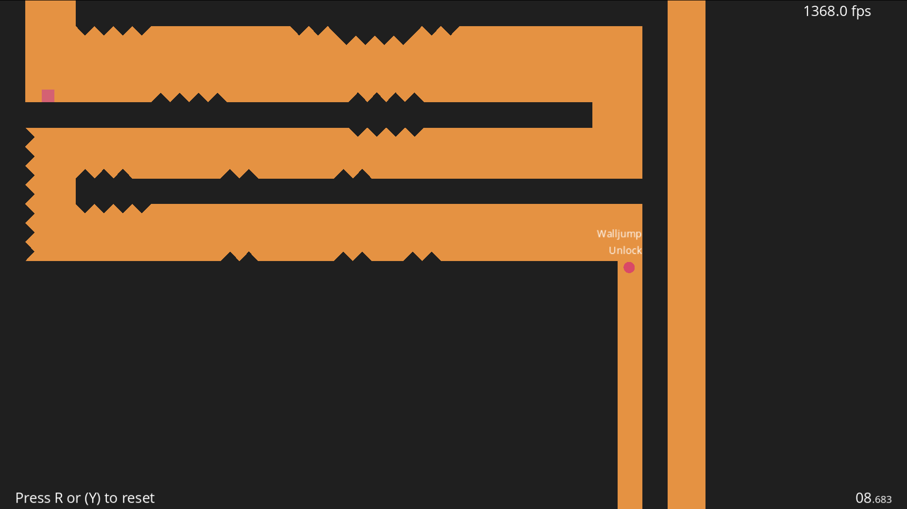

modular 2d platformer
building a modular 2d platformer in godot 4
The Simple Shape Platformer started as a minimal visual experiment and gradually turned into a focused prototype about movement feel, level flow, and reusable systems. The goal was to see how far a clean geometric style could go when paired with responsive controls and editor-friendly tooling.

room system
One of the first problems to solve was room setup. In a screen-based platformer, manually adjusting camera limits and collision bounds for every space gets tedious fast, so the project uses a small @tool workflow in room.gd to handle that work in the editor.
Designers can set room width and height as screen-sized units in the inspector, and the collision shape updates automatically. That keeps layout iteration quick and makes it easier to build connected rooms without constantly fixing camera boundaries by hand.
When the player moves from one room to the next, the camera limits shift and the view slides into place. The pause is brief, but it gives transitions a deliberate, classic feel that fits the project well.
@tool
extends Node2D
var screen_x = 1152
var screen_y = 640
@onready var area = $RoomArea
@export var width : int = 1:
set(value):
width = value
$RoomArea/RoomCollision.shape = $RoomArea/RoomCollision.shape.duplicate()
$RoomArea/RoomCollision.shape.size.x = value * screen_x
get:
return $RoomArea/RoomCollision.shape.size.x / screen_xmovement and physics
Most of the work went into movement. For a platformer like this, the difference between something that feels good and something that feels forgettable usually comes down to small timing details.
The player controller includes variable jump height, coyote time, wall interaction, and jump buffering so inputs feel reliable even when timing is slightly early or late. There is also a charged power jump that adds a stronger vertical option and gives the movement system a bit more personality.
Wall slides reduce gravity, wall jumps apply a controlled push-off, and external forces such as bouncepads can feed into the movement state without making the controller feel messy. The result is a system that stays readable while still leaving room for expressive movement.
graph TD
A[Player Input] --> B{Action Pressed?}
B -->|Jump| C{Ground Check / Coyote?}
C -->|Yes| D[Standard Jump]
C -->|No| E{Wall Contact?}
E -->|Yes| F[Wall Jump & Pushback]
E -->|No| G{Double Jump Unlocked?}
G -->|Yes & Available| H[Double Jump & Spin Anim]
B -->|Grab + Jump| I[Charge Power Jump]
I -->|Release| J[Amplified High Jump + Screenshake]
pickup design
To keep the player script from turning into a pile of item-specific logic, pickups use a simple delegation pattern in pickup.gd. Each pickup decides what kind of action it represents, then calls the matching method on the player.
That makes ability unlocks like wall_jump, double_jump, and power_jump easy to configure in the inspector without hardwiring every interaction into one giant controller. It also keeps the code easier to extend when new pickup types are added later.
The pickups themselves are drawn with lightweight canvas code and animated with tweens instead of relying on heavier texture work. That fits the visual style and keeps the whole project consistent.
func _on_area_2d_body_entered(body):
var func_name = "_" + TYPE
if body is Player:
var func_ref = Callable(body, func_name)
if TYPE == "UNLOCK":
func_ref.call(unlocking)
else:
func_ref.call()
if one_time:
queue_free()supporting systems
A few smaller systems helped round the project out. The options menu uses proper linear-to-decibel conversion for volume sliders, and settings plus basic run statistics are serialized into a save file for persistence.
Those features are not flashy, but they matter. They make the prototype feel more complete and show the same attention to structure as the movement and level systems.
visual direction
What I like most about the project is that the presentation comes directly from the technical constraints instead of hiding them. Simple shapes, procedural grids, and shader-driven transitions give it a distinct look without needing heavy art production.
That approach kept the scope manageable while still giving the game a clear identity. In the end, the project became less about minimalism for its own sake and more about using a restricted visual language to support sharp movement and clean design.
This geometric platformer prototype demonstrates how modular design principles and responsiveness can elevate simple shapes into an engaging, platforming core.